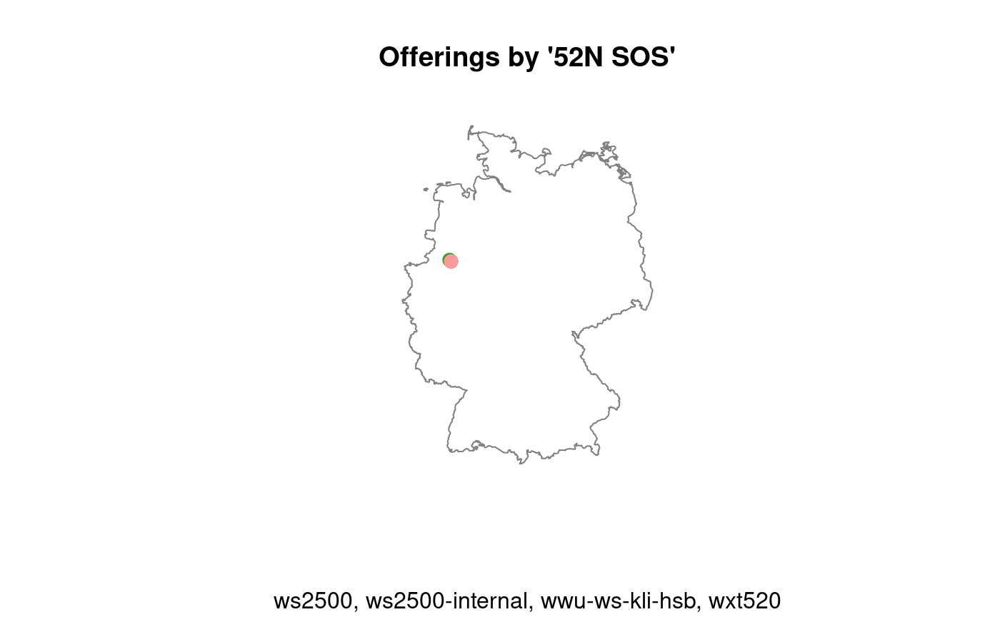

vignettes/sos4R-vignette-03-sos-operations.Rmd
sos4R-vignette-03-sos-operations.RmdAbstract
The sos4R package provides simple yet powerful access to OGC Sensor Observation Service instances. The package supports both encapsulation and abstraction from the service interface for novice users as well as powerful request building for specialists. sos4R is motivated by the idea to close the gap between the Sensor Web and tools for (geo-)statistical analyses. It implements the core profile of the SOS specification and supports temporal, spatial, and thematical filtering of observations.
This document describes which of the possible features and implementations of the rather generic standards are supported. It gives a detailed overview of the SOS operations and how to use them with sos4R.
The package provides accessor functions for the supported parameters. It is recommended to access options from the lists returned by these functions instead of hard-coding them into scripts.
This section only lists the possibilities. Explanations follow in this document or can be found in the SOS specification.
SosSupportedOperations()
#> [1] "GetCapabilities" "DescribeSensor" "GetObservation"
#> [4] "GetObservationById"
SosSupportedServiceVersions()
#> [1] "1.0.0" "2.0.0"
SosSupportedBindings()
#> Key-value-pair (GET) Plain old XML (POST)
#> "KVP" "POX"
SosSupportedResponseFormats()
#> [1] "text/xml;subtype=\"om/1.0.0\""
#> [2] "text/xml;subtype=\"sensorML/1.0.1\""
#> [3] "text/csv"
#> [4] "application/vnd.google-earth.kml+xml"The response format "text/csv" is not standard conform, but used by services as a well established alternative to XML encodings.
SosSupportedResponseModes()
#> [1] "inline"
SosSupportedResultModels()
#> [1] "om:Measurement" "om:Observation"The output of the following calls are named lists (the name being the same as the value).
Two kinds of default values can be found in (function calls in) sos4R: (i) default depending on other function parameters, and (ii) global defaults. Global defaults can be inspected (not changed!) using the following functions. If you want to use a different value please change the respective argument in function calls.
SosDefaultBinding()
#> [1] "POX"
SosDefaults()
#> $sosDefaultCharacterEncoding
#> [1] "UTF-8"
#>
#> $sosDefaultDescribeSensorOutputFormat
#> [1] "text/xml;subtype=\"sensorML/1.0.1\""
#>
#> $sosDefaultGetCapSections
#> [1] "All"
#>
#> $sosDefaultGetCapAcceptFormats
#> [1] "text/xml"
#>
#> $sosDefaultGetCapOwsVersion
#> [1] "1.1.0"
#>
#> $sosDefaultGetObsResponseFormat
#> [1] "text/xml;subtype=\"om/1.0.0\""
#>
#> $sosDefaultTimeFormat
#> [1] "%Y-%m-%dT%H:%M:%OS"
#>
#> $sosDefaultFilenameTimeFormat
#> [1] "%Y-%m-%d_%H-%M-%OS"
#>
#> $sosDefaultTempOpPropertyName
#> [1] "om:samplingTime"
#>
#> $sosDefaultTemporalOperator
#> [1] "TM_During"
#>
#> $sosDefaultSpatialOpPropertyName
#> [1] "urn:ogc:data:location"
#>
#> $sosDefaultColumnNameFeatureIdentifier
#> [1] "feature"
#>
#> $sosDefaultColumnNameLat
#> [1] "lat"
#>
#> $sosDefaultColumnNameLon
#> [1] "lon"
#>
#> $sosDefaultColumnNameSRS
#> [1] "SRS"
#>
#> $sosDefaultReferenceFrameSensorDescription
#> [1] "urn:ogc:def:crs:EPSG:4326"The process of data download also comprises (i) building requests, (ii) decoding responses, and (iii) applying the correct R data type to the respective data values. This mechanism is explained in detail in the vignette “Extending”. The package comes with a set of predefined encoders, decoders and converters (output not shown here as it is very extensive).
The method SOS() is a construction method for classes encapsulating a connection to a SOS. It prints out a short statement when the connection was successfully established (i.e. the capabilities document was received) and returns an object of class SOS.
mySOS <- SOS(url = "http://sensorweb.demo.52north.org/sensorwebtestbed/service/kvp", binding = "KVP")
#> [sos4R] Created SOS for URL http://sensorweb.demo.52north.org/sensorwebtestbed/service/kvpTo create a SOS connection you only need the URL of the service (i.e. the URL endpoint which can be used for HTTP requests). The service connection created above is used for all examples throughout this document.
All parameters except the service endpoint are optional and use default settings:
method: The transport protocol. Currently available are KVP, POX, the default is POX. POX supports more powerful filtering.version: The service version. Currently available version(s) is/are 1.0.0, 2.0.0.parsers: The list of parsing functions. See vignette “Extending”.encoders: The list of encoding functions. See vignette “Extending”.dataFieldConverters: The list of conversion functions. See vignette “Extending”.timeFormat: The time format to be used or decoding and encoding time character strings to and from POSIXt classes, the default is %Y-%m-%dT%H:%M:%OS.verboseOutput: Trigger parameter for extensive debugging information on the console.
switchCoordinates: Switches all coordinates that are encountered during the parsing phase, such as in an element like <gml:lowerCorner>117.3 -41.5</gml:lowerCorner>.There are accessor methods for the slots, the “properties”, of the class.
sosUrl(mySOS)
sosTitle(mySOS)
sosAbstract(mySOS)
sosVersion(mySOS)
sosTimeFormat(mySOS)
sosBinding(mySOS)Print and summary methods are available for important classes, like SOS.
mySOS
#> Object of class SOS_1.0.0 [KVP, http://sensorweb.demo.52north.org/sensorwebtestbed/service/kvp, 52N SOS]
summary(mySOS)
#> $class
#> [1] "SOS_1.0.0"
#> attr(,"package")
#> [1] "sos4R"
#>
#> $version
#> [1] "1.0.0"
#>
#> $url
#> [1] "http://sensorweb.demo.52north.org/sensorwebtestbed/service/kvp"
#>
#> $binding
#> [1] "KVP"
#>
#> $title
#> [1] "52N SOS"
#>
#> $abstract
#> [1] "52North Sensor Observation Service - Data Access for the Sensor Web"
#>
#> $time
#> Length Class Mode
#> ws2500 1 GmlTimePeriod S4
#> ws2500-internal 1 GmlTimePeriod S4
#> wwu-ws-kli-hsb 1 GmlTimePeriod S4
#> wxt520 1 GmlTimePeriod S4
#>
#> $offeringCount
#> [1] 4
#>
#> $procedureCount
#> [1] 4
#>
#> $observedPropCount
#> [1] 43
#>
#> attr(,"class")
#> [1] "summary.SOS_versioned"sos4R implements the SOS core profile of version 1.0.0 comprising the operations GetCapabilities, DescribeSensor and GetObservation. This document focusses on the practical usage of the operations, so the reader is refered to the specification document for details.
The methods mirroring the SOS operations all contain debugging parameters inspect and verbose as described in the “Quickstart” vignette.
The GetCapabilities operations is automatically conducted during the connecting to a SOS instance. The response is the capabilities document, which contains a detailed description of the services capabilities. It’s sections describe: service identification, service provider, operations metadata (parameter names, …), filter capabilities, and contents (a list of offering descriptions). Please see section 8.2.3 of the SOS specification for details. If you want to inspect the original capabilities document XML, it can be re-requested using
The actual operation can be started with the following function. It returns an object of class SosCapabilities which can be accessed later on by the function sosCaps() from an object of class SOS.
The parameters of the operation are:
sos: The SOS connection to request the capabilities document from.inspect and verbose: control the logging output, see “Quickstart” vignette.The respective parts of the capabilities document are modelled as R classes and can be accessed with accessor functions:
sosServiceIdentification(mySOS)
#> Object of class OwsServiceIdentification:
#> ServiceType: OGC:SOS ; serviceTypeVersion(s): 1.0.0
#> title(s): 52N SOS
#> Profile(s): http://www.opengis.net/extension/SOSDO/1.0/observationDeletion, http://www.opengis.net/spec/OMXML/1.0/conf/categoryObservation, http://www.opengis.net/spec/OMXML/1.0/conf/countObservation, http://www.opengis.net/spec/OMXML/1.0/conf/geometryObservation, http://www.opengis.net/spec/OMXML/1.0/conf/measurement, http://www.opengis.net/spec/OMXML/1.0/conf/textObservation, http://www.opengis.net/spec/OMXML/1.0/conf/truthObservation, http://www.opengis.net/spec/OMXML/2.0/conf/categoryObservation, http://www.opengis.net/spec/OMXML/2.0/conf/countObservation, http://www.opengis.net/spec/OMXML/2.0/conf/geometryObservation, http://www.opengis.net/spec/OMXML/2.0/conf/measurement, http://www.opengis.net/spec/OMXML/2.0/conf/samplingCurve, http://www.opengis.net/spec/OMXML/2.0/conf/samplingPoint, http://www.opengis.net/spec/OMXML/2.0/conf/samplingSurface, http://www.opengis.net/spec/OMXML/2.0/conf/spatialSampling, http://www.opengis.net/spec/OMXML/2.0/conf/textObservation, http://www.opengis.net/spec/OMXML/2.0/conf/truthObservation, http://www.opengis.net/spec/SOS/1.0/conf/core, http://www.opengis.net/spec/SOS/1.0/conf/enhanced, http://www.opengis.net/spec/SOS/2.0/conf/core, http://www.opengis.net/spec/SOS/2.0/conf/daRetrieval, http://www.opengis.net/spec/SOS/2.0/conf/exi, http://www.opengis.net/spec/SOS/2.0/conf/foiRetrieval, http://www.opengis.net/spec/SOS/2.0/conf/insertionCap, http://www.opengis.net/spec/SOS/2.0/conf/json, http://www.opengis.net/spec/SOS/2.0/conf/kvp-core, http://www.opengis.net/spec/SOS/2.0/conf/obsByIdRetrieval, http://www.opengis.net/spec/SOS/2.0/conf/obsInsertion, http://www.opengis.net/spec/SOS/2.0/conf/pox, http://www.opengis.net/spec/SOS/2.0/conf/rest, http://www.opengis.net/spec/SOS/2.0/conf/resultRetrieval, http://www.opengis.net/spec/SOS/2.0/conf/sensorInsertion, http://www.opengis.net/spec/SOS/2.0/conf/soap, http://www.opengis.net/spec/SOS/2.0/conf/updateSensorDescription, http://www.opengis.net/spec/SWE/2.0/conf/core, http://www.opengis.net/spec/SWE/2.0/conf/general-encoding-rules, http://www.opengis.net/spec/SWE/2.0/conf/text-encoding-rules, http://www.opengis.net/spec/SWE/2.0/conf/uml-block-components, http://www.opengis.net/spec/SWE/2.0/conf/uml-record-components, http://www.opengis.net/spec/SWE/2.0/conf/uml-simple-components, http://www.opengis.net/spec/SWE/2.0/conf/uml-simple-encodings, http://www.opengis.net/spec/SWE/2.0/conf/xsd-block-components, http://www.opengis.net/spec/SWE/2.0/conf/xsd-record-components, http://www.opengis.net/spec/SWE/2.0/conf/xsd-simple-components, http://www.opengis.net/spec/SWE/2.0/conf/xsd-simple-encodings, http://www.opengis.net/spec/waterml/2.0/conf/uml-measurement-timeries-tvp-observation, http://www.opengis.net/spec/waterml/2.0/conf/uml-timeseries-tvp-observation, http://www.opengis.net/spec/waterml/2.0/conf/xsd-measurement-timeseries-tvp, http://www.opengis.net/spec/waterml/2.0/conf/xsd-timeseries-observation, http://www.opengis.net/spec/waterml/2.0/conf/xsd-timeseries-tvp-observation, http://www.opengis.net/spec/waterml/2.0/conf/xsd-xml-rules
#> Abstract(s): 52North Sensor Observation Service - Data Access for the Sensor Web
#> Keywords(s): NA
#> AccessConstraints(s): NONEsosServiceProvider(mySOS)
#> Object of class OwsServiceProvider:
#> Provider name: 52North ; providerSite: http://52north.org/
#> Service contact: (unparsed XML, see @serviceContact for details)sosFilter_Capabilities(mySOS)
#> Object of class SosFilter_Capabilities;
#> Spatial_Capabilities: gml:Envelope, gml:LineString, gml:Point, gml:Polygon ; Overlaps, Intersects, Contains, BBOX
#> Temporal_Capablities: gml:TimeInstant, gml:TimePeriod ;
#> Scalar_Capablities: EqualTo, NotEqualTo, LessThan, GreaterThan, LessThanEqualTo, GreaterThanEqualTo, Like, Between
#> Id_Capabilities ogc:FID, ogc:EIDsosContents(mySOS)
#> Object of class SosContents with observation offerings (names):
#> ws2500, ws2500-internal, wwu-ws-kli-hsb, wxt520The first three functions extract clearly structured, self-explanatory parts of the document. You can use this to add proper accredetation to your figures, for example.
The contents part however is described in detail in section Metadata Extraction, as it can (and should) be used to extract query parameters.
The function sosTime() returns the time period for which observations are available within the service. To be precise, it accesses the ows:Range element of the parameter eventTime in the description of the GetObservation operation.
sosTime(mySOS)
#> $ws2500
#> GmlTimePeriod: [ GmlTimePosition [ time: 2015-05-18 08:35:00 ]
#> --> GmlTimePosition [ time: 2018-01-06 05:45:00 ] ]
#>
#> $`ws2500-internal`
#> GmlTimePeriod: [ GmlTimePosition [ time: 2015-05-18 08:35:00 ]
#> --> GmlTimePosition [ time: 2018-01-06 05:45:00 ] ]
#>
#> $`wwu-ws-kli-hsb`
#> GmlTimePeriod: [ GmlTimePosition [ time: 2015-03-29 22:00:00 ]
#> --> GmlTimePosition [ time: 2018-03-08 14:10:00 ] ]
#>
#> $wxt520
#> GmlTimePeriod: [ GmlTimePosition [ time: 2015-05-18 08:50:45 ]
#> --> GmlTimePosition [ time: 2018-07-10 12:00:00 ] ]The operations supported by the SOS are listed in the ows:OperationsMetadata element, which is modelled as an R class, OwsOperationsMetadata, which contains a list of objects of class OwsOperation which in turn describe the allowed parameter values for calls to the operation. The operations metadata and individual operations can be inspected with the following functions.
sosOperationsMetadata(mySOS)
sosOperation(mySOS, "GetCapabilities")
sosOperation(mySOS, sosGetCapabilitiesName)The allowed response formats (the file format/encoding of the response), the response modes (for example inline or as attachment) and the result models (a qualified XML name of the root element of the response) differ for every operation of the service. The following accessor methods return either (i) a list (named by the operation names) of vectors (with the actual allowed parameter values), or (ii) with the unique parameter set to TRUE, a unique list of all allowed values. Please be aware that these are not allowed for all operations, not are all options supported by sos4R.
sosResponseFormats(mySOS)
#> $GetObservation
#> $GetObservation[[1]]
#> [1] "application/json"
#>
#> $GetObservation[[2]]
#> [1] "http://dd.eionet.europa.eu/schemaset/id2011850eu-1.0"
#>
#> $GetObservation[[3]]
#> [1] "text/xml; subtype=\"om/1.0.0\""sosResponseMode(mySOS)
#> $DescribeSensor
#> NULL
#>
#> $GetCapabilities
#> NULL
#>
#> $GetFeatureOfInterest
#> NULL
#>
#> $GetObservation
#> $GetObservation[[1]]
#> [1] "inline"
#>
#> $GetObservation[[2]]
#> [1] "resultTemplate"
#>
#>
#> $GetObservationById
#> NULLsosResultModels(mySOS)
#> $DescribeSensor
#> NULL
#>
#> $GetCapabilities
#> NULL
#>
#> $GetFeatureOfInterest
#> NULL
#>
#> $GetObservation
#> $GetObservation[[1]]
#> [1] "om:CategoryObservation"
#>
#> $GetObservation[[2]]
#> [1] "om:GeometryObservation"
#>
#> $GetObservation[[3]]
#> [1] "om:Measurement"
#>
#> $GetObservation[[4]]
#> [1] "om:Observation"
#>
#>
#> $GetObservationById
#> NULLSome exemplary outputs of the operations are as follows (unnamed lists are simplified with toString()). Note the missing values for some operations (where options are not required they might not be available).
For future analyses, but also for correct plotting, one must know the coordinate reference system (CRS) or spatial reference system (SRS) or the returned data. You can get this information using the method sosGetCRS() from variuos objects.
The function utilizes the EPSG code in GML attributes like srsName="urn:ogc:def:crs:EPSG:4326" to initialize an object of class CRS from the package sp. For SOS and SosObservationOffering objects these are taken from the bounding box given in the gml:boundedBy element.
sosGetCRS("urn:ogc:def:crs:EPSG::4326")
#> CRS arguments:
#> +init=epsg:4326 +proj=longlat +datum=WGS84 +no_defs +ellps=WGS84
#> +towgs84=0,0,0# returns the CRS of offering(s) based on the CRS
# used in the element gml:boundedBy:
sosGetCRS(mySOS)[1:2]
#> $ws2500
#> CRS arguments:
#> +init=epsg:4326 +proj=longlat +datum=WGS84 +no_defs +ellps=WGS84
#> +towgs84=0,0,0
#>
#> $`ws2500-internal`
#> CRS arguments:
#> +init=epsg:4326 +proj=longlat +datum=WGS84 +no_defs +ellps=WGS84
#> +towgs84=0,0,0sosGetCRS(sosOfferings(mySOS)[[1]])
#> CRS arguments:
#> +init=epsg:4326 +proj=longlat +datum=WGS84 +no_defs +ellps=WGS84
#> +towgs84=0,0,0Mre examples for sosGetSRS() can be found in section Spatial Reference Systems.
The content of the capabilities document allows the plotting of a service’s offerings. The following example uses the packages maps, mapdata and maptools to create a background map. Plotting functions exist for objects of class SOS and SosObservationOffering, so offerings can also be plotted separately.
# background map:
library("maps"); library("mapdata"); library("maptools")
#> Loading required package: sp
#> Checking rgeos availability: TRUE
data(worldHiresMapEnv)
crs <- sosGetCRS(mySOS)[[1]]
worldHigh <- pruneMap(
map(database = "worldHires",
region = c("Germany", "Austria", "Netherlands"),
plot = FALSE))
worldHigh.lines <- map2SpatialLines(worldHigh, proj4string = crs)
# the plot:
plot(worldHigh.lines, col = "grey50")
plot(mySOS, add = TRUE, lwd = 3)
title(main = paste("Offerings by '", sosTitle(mySOS), "'", sep = ""),
sub = toString(names(sosOfferings(mySOS))))
The DescribeSensor operation is specified in clause 8.3 of the SOS specification and its response is modeled in Sensor Model Language (SensorML) and Transducer Markup Language (TML) specifications.
The DescribeSensor operation is useful for obtaining detailed information of sensor characteristics encoded in either SensorML or TML. The sensor characteristics can include lists and definitions of observables supported by the sensor. […]
The parameters of the operation are as follows. Please see other sections of this document on how to get supported respectively allowed values of request parameters from SOS metadata.
sos: The SOS connection to request a sensor description from.procedure: The identifier of the sensor, so one of the character strings returned by sosProcedures().outputFormat: The format in which the sensor description is to be returned. The default is text/xml;subtype=“sensorML/1.0.1”.inspect and verbose: See “Quickstart” vignette.saveOriginal: Saves a copy of the response document in the current working directory. Accepts boolean values (TRUE will automatically create file name with time stamp) or character string to be used as file name.A simple example is as follows.
mySensor <- describeSensor(sos = mySOS,
procedure = sosProcedures(mySOS)[[1]],
outputFormat = 'text/xml; subtype="sensorML/1.0.1"', # space is needed!
)
mySensor
#> Object of class SensorML (see @xml for full document).
#> ID: ws2500
#> name: 52n-elv-ws2500
#> description: NA
#> coords: 51.934814453125, 7.652428150177, -Inf
#> boundedBy: 7.652428150177, 51.934814453125, 7.652428150177, 51.934814453125All additional information presented in the following depends on compliance of the sensor description with the SensorML Profile for Discovery.
The coordinates data frame of a sensor description can be accessed with the common method sosCoordinates().
Other possibly useful parts of the sensor description can be accessed as well:
This includes the coordinates with unit and reference system information in the attributes of the returned object.
The observed bounding box is also available for reuse.
sosBoundedBy(mySensor)
#> min max
#> coords.lon 7.652428 7.652428
#> coords.lat 51.934814 51.934814
#> attr(,"referenceFrame")
#> [1] "4326"The coordinates also allow the plotting of the sensor positions (see Figure below). Here it is assumed that the spatial reference system of the SOS is the same for data from the first offering and the sensor positions!
library("maps"); library("mapdata"); library("maptools")
data(worldHiresMapEnv)
# get sensor descriptions
procs <- unique(unlist(sosProcedures(mySOS)))
procs.descr <- lapply(X = procs, FUN = describeSensor,
sos = mySOS,
outputFormat = 'text/xml; subtype="sensorML/1.0.1"')
sensors.crs <- sosGetCRS(procs.descr[[1]])
worldHigh <- pruneMap(map(database = "worldHires",
region = c("Germany"),
plot = FALSE))
worldHigh.lines <- map2SpatialLines(worldHigh, proj4string = sensors.crs)
plot(worldHigh.lines, col = "grey50", ylim = c(44.0, 54.8))
for(x in procs.descr)
plot(x, add = TRUE, pch = 19)
text(sosCoordinates(procs.descr)[c("x", "y")],
labels = sosId(procs.descr), pos = 4, cex = 0.8)
title(main = paste("Sensors of", sosTitle(mySOS)))The GetObservation operation is specified in clause 8.4 of the SOS specification. In this section, all matters around requesting data are explained - from extracting query parameters from metadata, and sending the request, till finally extracting data values and coordinates from the response.
A few utility functions exist to minize a user’s amount of work to create usual requests. They accept normal R types as input and return the respective class from sos4R with useful default settings. These function’s names follow the pattern with sosCreate[name of object]() and exist for spatial and temporal filters.
It is recommended to extract the identifiers of procedures et cetera that are to be used for queries from the metadata description provided by the service, the capabilities document. This often ensures forward compatiblity and minimizes typing errors. The offerings are the “index” of the service and therefore we concentrate on the contents section of the capabilities here.
The class SosContents simply contains a list of objects of the class SosObservationOffering which one can get directly from the connection object and also by name of the :
#length(sosOfferings(mySOS))
sosOfferings(mySOS)[[1]]
#> Object of class SosObservationOffering; id: ws2500 , name: NA
#> time: GmlTimePeriod: [ GmlTimePosition [ time: 2015-05-18 08:35:00 ]
#> --> GmlTimePosition [ time: 2018-01-06 05:45:00 ] ]
#> procedure(s): ws2500
#> observedProperty(s): AirTemperature, AthmosphericPressure, Dewpoint, Humidity, Luminance, RainfallAccumulated, Sunshine, WindDirection, WindSpeed, Windchill
#> feature(s)OfInterest: ELV-WS2500
#> responseFormat(s): application/json, http://dd.eionet.europa.eu/schemaset/id2011850eu-1.0, text/xml; subtype="om/1.0.0" , responseMode(s): inline, resultTemplate
#> intendedApplication:
#> resultModel(s):
#> boundedBy: urn:ogc:def:crs:EPSG::4326, 51.934814453125 7.652428150177, 51.934814453125 7.652428150177The output when printing the full list is quite extensive, so we concentrate on just on element of it in the following examples. Printing and summary methods are available of objects of the class SosObservationOffering.
summary(sosOfferings(mySOS)[[1]])
#> Object of class SosObservationOffering
#> [[id:]] [1] "ws2500"
#> [[name:]] [1] NA
#> [[time:]] [1] "2015-05-18 08:35:00 --> 2018-01-06 05:45:00"
#> [[bbox:]] [1] "urn:ogc:def:crs:EPSG::4326, 51.934814453125 7.652428150177, 51.934814453125 7.652428150177"
#> [[fois:]] [1] 1
#> [[procs:]] [1] 1
#> [[obsProps:]] [1] 10The offerings list is named with the offering identifier, so the following statements return the same list.
sosName(sosOfferings(mySOS))
#> $ws2500
#> [1] NA
#>
#> $`ws2500-internal`
#> [1] NA
#>
#> $`wwu-ws-kli-hsb`
#> [1] NA
#>
#> $wxt520
#> [1] NAThe offering identifier is is used in the example below to extract the offering description of temperature measurements. The offerings list is a standard R list, so all subsetting operations are possible.
Note: The order of the offering list (as all other lists, e.g. procedures or observed properties) is not guaranteed to be the same upon every connection to a service. So indexing by name (though counteracting the mentioned forward compatibility, as names might change) is recommended at at least one point in the analysis so that changes in the contents of a service result in an error.
Metadata about the whole offering are identifier, name, and spatial and temporal extends.
The offerings also contains metadata about the format and model that are supported.
sosResponseFormats(myOffering)
#> [1] "application/json"
#> [2] "http://dd.eionet.europa.eu/schemaset/id2011850eu-1.0"
#> [3] "text/xml; subtype=\"om/1.0.0\""The spatial extend is given as a rectangular bounding box with two coordinates. The structure of the bounding box is kept flexible, as it simply returns a named list of lower and upper corner.
sosBoundedBy(myOffering)
#> $srsName
#> [1] "urn:ogc:def:crs:EPSG::4326"
#>
#> $lowerCorner
#> [1] "51.934814453125 7.652428150177"
#>
#> $upperCorner
#> [1] "51.934814453125 7.652428150177"The optional attribute bbox can be used to obtain a bounding box matrix as used by package sp.
sosBoundedBy(myOffering, bbox = TRUE)
#> min max
#> coords.lon 7.652428 7.652428
#> coords.lat 51.934814 51.934814The temporal extend is modeled as an object of the respective class of the element in the offering description, which normally is a gml:TimePeriod, but does not have to be.
myOffering.time <- sosTime(myOffering)
str(myOffering.time)
#> Formal class 'GmlTimePeriod' [package "sos4R"] with 9 slots
#> ..@ begin : NULL
#> ..@ beginPosition:Formal class 'GmlTimePosition' [package "sos4R"] with 4 slots
#> .. .. ..@ time : POSIXlt[1:1], format: "2015-05-18 08:35:00"
#> .. .. ..@ frame : chr NA
#> .. .. ..@ calendarEraName : chr NA
#> .. .. ..@ indeterminatePosition: chr NA
#> ..@ end : NULL
#> ..@ endPosition :Formal class 'GmlTimePosition' [package "sos4R"] with 4 slots
#> .. .. ..@ time : POSIXlt[1:1], format: "2018-01-06 05:45:00"
#> .. .. ..@ frame : chr NA
#> .. .. ..@ calendarEraName : chr NA
#> .. .. ..@ indeterminatePosition: chr NA
#> ..@ duration : chr NA
#> ..@ timeInterval : NULL
#> ..@ frame : chr NA
#> ..@ relatedTimes : list()
#> ..@ id : chr NAYou can also access the actual timestamps, which is a bit cumbersome.
myOffering.time@beginPosition@time
#> [1] "2015-05-18 08:35:00 CEST"
myOffering.time@endPosition@time
#> [1] "2018-01-06 05:45:00 CET"
class(myOffering.time@endPosition@time)
#> [1] "POSIXlt" "POSIXt"The structure of these elements is very flexible (with some of optional elements) and not self-explanatory. Therefore the parameter convert can be used to try to create R objects and return these instead. Please be aware that this might not work for temporal elements returned by all service.
myOffering.time.converted <- sosTime(myOffering, convert = TRUE)
str(myOffering.time.converted)
#> List of 2
#> $ begin: POSIXlt[1:1], format: "2015-05-18 08:35:00"
#> $ end : POSIXlt[1:1], format: "2018-01-06 05:45:00"Furthermore the offering comprises lists of procedures, observed properties, and features of interest**. In our example the feature and procedure identifiers are the same - this does not have to be the case.
Important Note: The order of these lists is not guaranteed to be the same upon every connection to a service.
sosProcedures(myOffering)
#> [1] "ws2500"
sosObservedProperties(myOffering)
#> [[1]]
#> [1] "AirTemperature"
#>
#> [[2]]
#> [1] "AthmosphericPressure"
#>
#> [[3]]
#> [1] "Dewpoint"
#>
#> [[4]]
#> [1] "Humidity"
#>
#> [[5]]
#> [1] "Luminance"
#>
#> [[6]]
#> [1] "RainfallAccumulated"
#>
#> [[7]]
#> [1] "Sunshine"
#>
#> [[8]]
#> [1] "WindDirection"
#>
#> [[9]]
#> [1] "WindSpeed"
#>
#> [[10]]
#> [1] "Windchill"
sosFeaturesOfInterest(myOffering)
#> [[1]]
#> [1] "ELV-WS2500"All of the above can not only be requested for single offerings but also for complete SOS connections or for lists of offerings. The following examples only print out a part of the returned lists.
sosProcedures(mySOS)[1:2]
#> $ws2500
#> [1] "ws2500"
#>
#> $`ws2500-internal`
#> [1] "ws2500-internal"sosObservedProperties(mySOS)[1:2]
#> $ws2500
#> $ws2500[[1]]
#> [1] "AirTemperature"
#>
#> $ws2500[[2]]
#> [1] "AthmosphericPressure"
#>
#> $ws2500[[3]]
#> [1] "Dewpoint"
#>
#> $ws2500[[4]]
#> [1] "Humidity"
#>
#> $ws2500[[5]]
#> [1] "Luminance"
#>
#> $ws2500[[6]]
#> [1] "RainfallAccumulated"
#>
#> $ws2500[[7]]
#> [1] "Sunshine"
#>
#> $ws2500[[8]]
#> [1] "WindDirection"
#>
#> $ws2500[[9]]
#> [1] "WindSpeed"
#>
#> $ws2500[[10]]
#> [1] "Windchill"
#>
#>
#> $`ws2500-internal`
#> $`ws2500-internal`[[1]]
#> [1] "AirTemperature"
#>
#> $`ws2500-internal`[[2]]
#> [1] "Humidity"sosFeaturesOfInterest(mySOS)[1:2]
#> $ws2500
#> $ws2500[[1]]
#> [1] "ELV-WS2500"
#>
#>
#> $`ws2500-internal`
#> $`ws2500-internal`[[1]]
#> [1] "http://52north.org/fac/internal/it-is/srv-01"Also (parts of) a list of offerings are possible with these functions:
sosProcedures(sosOfferings(mySOS)[2:3])
#> ws2500-internal wwu-ws-kli-hsb
#> "ws2500-internal" "wwu-ws-kli-hsb"sosObservedProperties(sosOfferings(mySOS)[2:3])
#> $`ws2500-internal`
#> $`ws2500-internal`[[1]]
#> [1] "AirTemperature"
#>
#> $`ws2500-internal`[[2]]
#> [1] "Humidity"
#>
#>
#> $`wwu-ws-kli-hsb`
#> $`wwu-ws-kli-hsb`[[1]]
#> [1] "AirTemperature"
#>
#> $`wwu-ws-kli-hsb`[[2]]
#> [1] "AthmosphericPressure"
#>
#> $`wwu-ws-kli-hsb`[[3]]
#> [1] "Humidity"
#>
#> $`wwu-ws-kli-hsb`[[4]]
#> [1] "ShortwaveRadiation"
#>
#> $`wwu-ws-kli-hsb`[[5]]
#> [1] "Visibility"
#>
#> $`wwu-ws-kli-hsb`[[6]]
#> [1] "WeatherCode"
#>
#> $`wwu-ws-kli-hsb`[[7]]
#> [1] "WeatherCode_text"
#>
#> $`wwu-ws-kli-hsb`[[8]]
#> [1] "WindDirection"
#>
#> $`wwu-ws-kli-hsb`[[9]]
#> [1] "WindDirectionText"
#>
#> $`wwu-ws-kli-hsb`[[10]]
#> [1] "WindMaxGust"
#>
#> $`wwu-ws-kli-hsb`[[11]]
#> [1] "WindSpeedBft"
#>
#> $`wwu-ws-kli-hsb`[[12]]
#> [1] "WindSpeedKmh"
#>
#> $`wwu-ws-kli-hsb`[[13]]
#> [1] "WindSpeedMperSec"sosFeaturesOfInterest(sosOfferings(mySOS)[1:2])
#> $ws2500
#> [1] "ELV-WS2500"
#>
#> $`ws2500-internal`
#> [1] "http://52north.org/fac/internal/it-is/srv-01"Please carefully inspect the structure in each case, as these functions will return named lists of lists and not combine procedures from different offerings. Consequently, some procedures could appear several times, but the association to the offering is still intact which is preferred at this stage.
The mandatory attributes are sos, offering, observedProperty and responseFormat. The other parameters are set to NA and not used when building the request.
Please see section 8.4.2 of the SOS specification for details and other sections of this document for supported values respectively allowed values of request parameters. Note that different implementations might respond differently to missing parameters.
defaultResponseFormatGetObs <- gsub(pattern = """, replacement = "'", x = sosDefaultGetObsResponseFormat)
defaultResponseFormatGetObs
#> [1] "text/xml;subtype=\"om/1.0.0\""sos: The service connection to be used, an object of class SOS.offering: The offering to be used, either the identifier as a character string or an object of class SosObservationOffering.observedProperty: The observed property of the desired observations. The default is all observed property of the offering, sosObservedProperties(obj = offering).responseFormat: The format of the response document. The default is defaultResponseFormatGetObs.srsName: The name of the spatial reference system that should be used for the geometries in the response.eventTime: A list of objects of class SosEventTime which specify the time period(s) for which observations are requested. See section Temporal Fitering for more information.procedure: A list of procedure identifiers for which observations are requested. See section Spatial Filtering for more information.featureOfInterest: An object of class SosFeatureOfInterest which specifies the feature for which observations are requested. See sections Spatial Filtering and Feature Filtering for more information.result: An object of class OgcComparisonOps for result filtering with filter expressions from Filter Encoding. See section Value Filtering for more information.resultModel: The qualified XML name of the root element of the response, e.g. om:Measurement. The available models of a service can be found in the service metadata using sosResultModel().responseMode: The response mode defines the form of the response, e.g. inline, out-of-band, or attached. The available models of a service can be found in the service metadata using sosResponseMode().BBOX: A bounding box to be used only in HTTP GET connections (parameter is discarded for POST connections). The format must one character string with minlon,minlat,maxlon,maxlat,srsURI?, the spatial reference system is optional.saveOriginal: Saves a copy of the response document in the current working directory. Accepts boolean values (TRUE will automatically create file name with time stamp) or character string to be used as file name.The returned data of all GetObservation operations is an XML document of type om:Observation, om:Measurement, or om:ObservationCollection which holds a list of the former two. All three of these have corresponding S4 classes, namely OmObservation, OmMeasurement, or OmObservationCollection.
The most straightforward (and most simple to use) methods to query certain observations are to request one (or several) specific observed property (phenomenon) or procedure (sensor). Note that the procedures and observed properties have to match the given offering, which the do not in the second case. In the next two cases, there is no temporal filter, so the code is not executed here because these request would potentially retrieve a lot of data, since there is no temporal (or thematical/spatial) limitation.
getObservation(sos = mySOS,
offering = myOffering,
procedure = sosProcedures(myOffering),
#procedure = sosProcedures(myOffering)[[1]],
observedProperty = as.list(names(sosObservedProperties(mySOS)[3:4])))The following example requests data for about one day of temperature data and stores it in the object myObservationData. This feature is described extensively in section Temporal Filtering.
myObservationData <- getObservation(sos = mySOS,
offering = myOffering,
eventTime = sosCreateTime(sos = mySOS,
time = "2018-01-01::2018-01-06"))
#> Warning in .valParser(values = xml2::xml_child(x = obj, search = sweValuesName, : No converter for the unit of measurement l_m^2 with the definition RainfallAccumulated ! Trying a default, but you can add one when creating a SOS using SosDataFieldConvertingFunctions().
#> Warning in .valParser(values = xml2::xml_child(x = obj, search = sweValuesName, : No converter for the unit of measurement klux with the definition Luminance ! Trying a default, but you can add one when creating a SOS using SosDataFieldConvertingFunctions().
#> Warning in .valParser(values = xml2::xml_child(x = obj, search = sweValuesName, : No converter for the unit of measurement km_h with the definition WindSpeed ! Trying a default, but you can add one when creating a SOS using SosDataFieldConvertingFunctions().
#> [sos4R] Finished getObservation to http://sensorweb.demo.52north.org/sensorwebtestbed/service/kvp
#> --> received 9 observation(s) having 3240 result values [ 360, 360, 360, 360, 360, 360, 360, 360, 360 ].The logging output above starting with [sos4R] informs the user when the download of data is complete and when the parsing has finished. It even contains some information about the data, if possible. In following requests, this ouput is not included for brevity.
The response myObservationData of this request is the base for the next sections.
Subsetting of elements in an OmObservationCollection can be done just like in a normal list (in fact, it just wraps at list of observations at this point), i.e. with the operators [ and [[. Summary functions are available for single observations or an observation collection.
myObservationData[[1]]
#> Object of class OmObservation;
#> procedure: ws2500
#> observedProperty: AirTemperature
#> foi: sf_D153415C3D5A39F8C238B4BE37ADCE60EDB9069F
#> samplingTime: GmlTimePeriod: [ GmlTimePosition [ time: 2018-01-01 00:30:00 ]
#> --> GmlTimePosition [ time: 2018-01-06 ] ]
#> result dimensions: 360, 2summary(myObservationData)
#> Object of class OmObservationCollection
#> [[members:]] [1] 9
#> [[bounded by:]] [1] "urn:ogc:def:crs:EPSG::4326, 51.934814453125 7.652428150177, 51.934814453125 7.652428150177"
#> [[procedures:]] [1] 1
#> [[obs. props:]] [1] 9
#> [[features:]] [1] 9summary(myObservationData[[1]])
#> Object of class OmObservation
#> [[samplingTime:]] [1] 1
#> [[procedures:]] [1] 1
#> [[obs. props:]] [1] 1
#> [[features:]] [1] 1
#> [[result summary:]]
#> phenomenonTime AirTemperature
#> Min. :2018-01-01 00:30:00 Min. :22.8
#> 1st Qu.:2018-01-02 06:26:15 1st Qu.:22.8
#> Median :2018-01-03 12:15:00 Median :22.8
#> Mean :2018-01-03 12:15:18 Mean :22.8
#> 3rd Qu.:2018-01-04 18:07:30 3rd Qu.:22.8
#> Max. :2018-01-06 00:00:00 Max. :22.8The collection can also be subset in parts:
Observation collection indexing is possible with identifiers of procedure(s), observed property(ies), and feature(s) of interest.
index.foiId <- sosFeaturesOfInterest(myOffering)[[1]]
index.foiId
#> [1] "ELV-WS2500"
cat("------\n")
#> ------
myObservationData[index.foiId]
#> list()index.obsProp <- sosObservedProperties(myOffering)[[1]]
index.obsProp
#> [1] "AirTemperature"
cat("------\n")
#> ------
myObservationData[index.obsProp]
#> $o_1554982003905
#> Object of class OmObservation;
#> procedure: ws2500
#> observedProperty: AirTemperature
#> foi: sf_D153415C3D5A39F8C238B4BE37ADCE60EDB9069F
#> samplingTime: GmlTimePeriod: [ GmlTimePosition [ time: 2018-01-01 00:30:00 ]
#> --> GmlTimePosition [ time: 2018-01-06 ] ]
#> result dimensions: 360, 2index.proc <- sosProcedures(myOffering)
index.proc.alternative1 <- sosProcedures(myOffering)[1]
index.proc.alternative2 <- sosProcedures(mySOS)
index.proc
#> [1] "ws2500"
cat("------\n")
#> ------
myObservationData[index.proc]
#> $o_1554982003905
#> Object of class OmObservation;
#> procedure: ws2500
#> observedProperty: AirTemperature
#> foi: sf_D153415C3D5A39F8C238B4BE37ADCE60EDB9069F
#> samplingTime: GmlTimePeriod: [ GmlTimePosition [ time: 2018-01-01 00:30:00 ]
#> --> GmlTimePosition [ time: 2018-01-06 ] ]
#> result dimensions: 360, 2
#>
#> $o_1554982003906
#> Object of class OmObservation;
#> procedure: ws2500
#> observedProperty: RainfallAccumulated
#> foi: sf_0503F9F043B2142F2F0C5C8A434162572227EE3E
#> samplingTime: GmlTimePeriod: [ GmlTimePosition [ time: 2018-01-01 00:30:00 ]
#> --> GmlTimePosition [ time: 2018-01-06 ] ]
#> result dimensions: 360, 2
#>
#> $o_1554982003907
#> Object of class OmObservation;
#> procedure: ws2500
#> observedProperty: Humidity
#> foi: sf_FC680E3EBEF4515C107B61850DC9D919D3016A55
#> samplingTime: GmlTimePeriod: [ GmlTimePosition [ time: 2018-01-01 00:30:00 ]
#> --> GmlTimePosition [ time: 2018-01-06 ] ]
#> result dimensions: 360, 2
#>
#> $o_15549820039071
#> Object of class OmObservation;
#> procedure: ws2500
#> observedProperty: AthmosphericPressure
#> foi: sf_FC680E3EBEF4515C107B61850DC9D919D3016A551
#> samplingTime: GmlTimePeriod: [ GmlTimePosition [ time: 2018-01-01 00:30:00 ]
#> --> GmlTimePosition [ time: 2018-01-06 ] ]
#> result dimensions: 360, 2
#>
#> $o_1554982003908
#> Object of class OmObservation;
#> procedure: ws2500
#> observedProperty: WindDirection
#> foi: sf_256083BDDA863356DE051CB5D172A687BD963B1A
#> samplingTime: GmlTimePeriod: [ GmlTimePosition [ time: 2018-01-01 00:30:00 ]
#> --> GmlTimePosition [ time: 2018-01-06 ] ]
#> result dimensions: 360, 2
#>
#> $o_1554982003909
#> Object of class OmObservation;
#> procedure: ws2500
#> observedProperty: Windchill
#> foi: sf_5062EEF9527BA9A75CAA28652CE3644F8EACD08F
#> samplingTime: GmlTimePeriod: [ GmlTimePosition [ time: 2018-01-01 00:30:00 ]
#> --> GmlTimePosition [ time: 2018-01-06 ] ]
#> result dimensions: 360, 2
#>
#> $o_1554982003910
#> Object of class OmObservation;
#> procedure: ws2500
#> observedProperty: Dewpoint
#> foi: sf_77D20EF29D4E8995479AC7600AAD2191DB5327C5
#> samplingTime: GmlTimePeriod: [ GmlTimePosition [ time: 2018-01-01 00:30:00 ]
#> --> GmlTimePosition [ time: 2018-01-06 ] ]
#> result dimensions: 360, 2
#>
#> $o_15549820039101
#> Object of class OmObservation;
#> procedure: ws2500
#> observedProperty: Luminance
#> foi: sf_77D20EF29D4E8995479AC7600AAD2191DB5327C51
#> samplingTime: GmlTimePeriod: [ GmlTimePosition [ time: 2018-01-01 00:30:00 ]
#> --> GmlTimePosition [ time: 2018-01-06 ] ]
#> result dimensions: 360, 2
#>
#> $o_1554982003911
#> Object of class OmObservation;
#> procedure: ws2500
#> observedProperty: WindSpeed
#> foi: sf_3C7C1E17AE8096DD13F54FBA7ED65E955E61D776
#> samplingTime: GmlTimePeriod: [ GmlTimePosition [ time: 2018-01-01 00:30:00 ]
#> --> GmlTimePosition [ time: 2018-01-06 ] ]
#> result dimensions: 360, 2Data Values can be extracted from observations, measurements and observation collections with the function sosResult(). The function returns an object of class data.frame. In the case of collections, it automatically binds the data frames (you can turn this off by adding bind = FALSE as a parameter).
names(myObservationData)
#> o_1554982003905.proc_obsProp_foiID
#> "ws2500_AirTemperature_sf_D153415C3D5A39F8C238B4BE37ADCE60EDB9069F"
#> o_1554982003906.proc_obsProp_foiID
#> "ws2500_RainfallAccumulated_sf_0503F9F043B2142F2F0C5C8A434162572227EE3E"
#> o_1554982003907.proc_obsProp_foiID
#> "ws2500_Humidity_sf_FC680E3EBEF4515C107B61850DC9D919D3016A55"
#> o_15549820039071.proc_obsProp_foiID
#> "ws2500_AthmosphericPressure_sf_FC680E3EBEF4515C107B61850DC9D919D3016A551"
#> o_1554982003908.proc_obsProp_foiID
#> "ws2500_WindDirection_sf_256083BDDA863356DE051CB5D172A687BD963B1A"
#> o_1554982003909.proc_obsProp_foiID
#> "ws2500_Windchill_sf_5062EEF9527BA9A75CAA28652CE3644F8EACD08F"
#> o_1554982003910.proc_obsProp_foiID
#> "ws2500_Dewpoint_sf_77D20EF29D4E8995479AC7600AAD2191DB5327C5"
#> o_15549820039101.proc_obsProp_foiID
#> "ws2500_Luminance_sf_77D20EF29D4E8995479AC7600AAD2191DB5327C51"
#> o_1554982003911.proc_obsProp_foiID
#> "ws2500_WindSpeed_sf_3C7C1E17AE8096DD13F54FBA7ED65E955E61D776"myObservationData.result.2 <- sosResult(myObservationData[[1]])
myObservationData.result.2
#> phenomenonTime AirTemperature
#> 1 2018-01-01 00:30:00 22.8
#> 2 2018-01-01 00:45:00 22.8
#> 3 2018-01-01 01:00:00 22.8
#> 4 2018-01-01 01:30:00 22.8
#> 5 2018-01-01 01:45:00 22.8
#> 6 2018-01-01 02:00:00 22.8
#> 7 2018-01-01 02:30:00 22.8
#> 8 2018-01-01 02:45:00 22.8
#> 9 2018-01-01 03:00:00 22.8
#> 10 2018-01-01 03:30:00 22.8
#> 11 2018-01-01 03:45:00 22.8
#> 12 2018-01-01 04:00:00 22.8
#> 13 2018-01-01 04:30:00 22.8
#> 14 2018-01-01 04:45:00 22.8
#> 15 2018-01-01 05:00:00 22.8
#> 16 2018-01-01 05:30:00 22.8
#> 17 2018-01-01 05:45:00 22.8
#> 18 2018-01-01 06:15:00 22.8
#> 19 2018-01-01 06:30:00 22.8
#> 20 2018-01-01 06:45:00 22.8
#> 21 2018-01-01 07:00:00 22.8
#> 22 2018-01-01 07:30:00 22.8
#> 23 2018-01-01 07:45:00 22.8
#> 24 2018-01-01 08:00:00 22.8
#> 25 2018-01-01 08:30:00 22.8
#> 26 2018-01-01 08:45:00 22.8
#> 27 2018-01-01 09:00:00 22.8
#> 28 2018-01-01 09:30:00 22.8
#> 29 2018-01-01 09:45:00 22.8
#> 30 2018-01-01 10:00:00 22.8
#> 31 2018-01-01 10:30:00 22.8
#> 32 2018-01-01 10:45:00 22.8
#> 33 2018-01-01 11:00:00 22.8
#> 34 2018-01-01 11:30:00 22.8
#> 35 2018-01-01 11:45:00 22.8
#> 36 2018-01-01 12:00:00 22.8
#> 37 2018-01-01 12:30:00 22.8
#> 38 2018-01-01 12:45:00 22.8
#> 39 2018-01-01 13:00:00 22.8
#> 40 2018-01-01 13:30:00 22.8
#> 41 2018-01-01 13:45:00 22.8
#> 42 2018-01-01 14:00:00 22.8
#> 43 2018-01-01 14:30:00 22.8
#> 44 2018-01-01 14:45:00 22.8
#> 45 2018-01-01 15:00:00 22.8
#> 46 2018-01-01 15:30:00 22.8
#> 47 2018-01-01 15:45:00 22.8
#> 48 2018-01-01 16:00:00 22.8
#> 49 2018-01-01 16:30:00 22.8
#> 50 2018-01-01 16:45:00 22.8
#> 51 2018-01-01 17:00:00 22.8
#> 52 2018-01-01 17:30:00 22.8
#> 53 2018-01-01 17:45:00 22.8
#> 54 2018-01-01 18:00:00 22.8
#> 55 2018-01-01 18:30:00 22.8
#> 56 2018-01-01 18:45:00 22.8
#> 57 2018-01-01 19:00:00 22.8
#> 58 2018-01-01 19:30:00 22.8
#> 59 2018-01-01 19:45:00 22.8
#> 60 2018-01-01 20:00:00 22.8
#> 61 2018-01-01 20:30:00 22.8
#> 62 2018-01-01 20:45:00 22.8
#> 63 2018-01-01 21:00:00 22.8
#> 64 2018-01-01 21:30:00 22.8
#> 65 2018-01-01 21:45:00 22.8
#> 66 2018-01-01 22:00:00 22.8
#> 67 2018-01-01 22:30:00 22.8
#> 68 2018-01-01 22:45:00 22.8
#> 69 2018-01-01 23:00:00 22.8
#> 70 2018-01-01 23:30:00 22.8
#> 71 2018-01-01 23:45:00 22.8
#> 72 2018-01-02 00:00:00 22.8
#> 73 2018-01-02 00:30:00 22.8
#> 74 2018-01-02 00:45:00 22.8
#> 75 2018-01-02 01:00:00 22.8
#> 76 2018-01-02 01:30:00 22.8
#> 77 2018-01-02 01:45:00 22.8
#> 78 2018-01-02 02:00:00 22.8
#> 79 2018-01-02 02:30:00 22.8
#> 80 2018-01-02 02:45:00 22.8
#> 81 2018-01-02 03:00:00 22.8
#> 82 2018-01-02 03:30:00 22.8
#> 83 2018-01-02 03:45:00 22.8
#> 84 2018-01-02 04:00:00 22.8
#> 85 2018-01-02 04:30:00 22.8
#> 86 2018-01-02 04:45:00 22.8
#> 87 2018-01-02 05:00:00 22.8
#> 88 2018-01-02 05:30:00 22.8
#> 89 2018-01-02 05:45:00 22.8
#> 90 2018-01-02 06:15:00 22.8
#> 91 2018-01-02 06:30:00 22.8
#> 92 2018-01-02 06:45:00 22.8
#> 93 2018-01-02 07:00:00 22.8
#> 94 2018-01-02 07:30:00 22.8
#> 95 2018-01-02 07:45:00 22.8
#> 96 2018-01-02 08:00:00 22.8
#> 97 2018-01-02 08:30:00 22.8
#> 98 2018-01-02 08:45:00 22.8
#> 99 2018-01-02 09:00:00 22.8
#> 100 2018-01-02 09:30:00 22.8
#> 101 2018-01-02 09:45:00 22.8
#> 102 2018-01-02 10:00:00 22.8
#> 103 2018-01-02 10:30:00 22.8
#> 104 2018-01-02 10:45:00 22.8
#> 105 2018-01-02 11:00:00 22.8
#> 106 2018-01-02 11:30:00 22.8
#> 107 2018-01-02 11:45:00 22.8
#> 108 2018-01-02 12:00:00 22.8
#> 109 2018-01-02 12:30:00 22.8
#> 110 2018-01-02 12:45:00 22.8
#> 111 2018-01-02 13:00:00 22.8
#> 112 2018-01-02 13:30:00 22.8
#> 113 2018-01-02 13:45:00 22.8
#> 114 2018-01-02 14:00:00 22.8
#> 115 2018-01-02 14:30:00 22.8
#> 116 2018-01-02 14:45:00 22.8
#> 117 2018-01-02 15:00:00 22.8
#> 118 2018-01-02 15:30:00 22.8
#> 119 2018-01-02 15:45:00 22.8
#> 120 2018-01-02 16:00:00 22.8
#> 121 2018-01-02 16:30:00 22.8
#> 122 2018-01-02 16:45:00 22.8
#> 123 2018-01-02 17:00:00 22.8
#> 124 2018-01-02 17:30:00 22.8
#> 125 2018-01-02 17:45:00 22.8
#> 126 2018-01-02 18:00:00 22.8
#> 127 2018-01-02 18:30:00 22.8
#> 128 2018-01-02 18:45:00 22.8
#> 129 2018-01-02 19:00:00 22.8
#> 130 2018-01-02 19:30:00 22.8
#> 131 2018-01-02 19:45:00 22.8
#> 132 2018-01-02 20:00:00 22.8
#> 133 2018-01-02 20:30:00 22.8
#> 134 2018-01-02 20:45:00 22.8
#> 135 2018-01-02 21:00:00 22.8
#> 136 2018-01-02 21:30:00 22.8
#> 137 2018-01-02 21:45:00 22.8
#> 138 2018-01-02 22:00:00 22.8
#> 139 2018-01-02 22:30:00 22.8
#> 140 2018-01-02 22:45:00 22.8
#> 141 2018-01-02 23:00:00 22.8
#> 142 2018-01-02 23:30:00 22.8
#> 143 2018-01-02 23:45:00 22.8
#> 144 2018-01-03 00:00:00 22.8
#> 145 2018-01-03 00:30:00 22.8
#> 146 2018-01-03 00:45:00 22.8
#> 147 2018-01-03 01:00:00 22.8
#> 148 2018-01-03 01:30:00 22.8
#> 149 2018-01-03 01:45:00 22.8
#> 150 2018-01-03 02:00:00 22.8
#> 151 2018-01-03 02:30:00 22.8
#> 152 2018-01-03 02:45:00 22.8
#> 153 2018-01-03 03:00:00 22.8
#> 154 2018-01-03 03:30:00 22.8
#> 155 2018-01-03 03:45:00 22.8
#> 156 2018-01-03 04:00:00 22.8
#> 157 2018-01-03 04:30:00 22.8
#> 158 2018-01-03 04:45:00 22.8
#> 159 2018-01-03 05:00:00 22.8
#> 160 2018-01-03 05:30:00 22.8
#> 161 2018-01-03 05:45:00 22.8
#> 162 2018-01-03 06:15:00 22.8
#> 163 2018-01-03 06:30:00 22.8
#> 164 2018-01-03 06:45:00 22.8
#> 165 2018-01-03 07:00:00 22.8
#> 166 2018-01-03 07:30:00 22.8
#> 167 2018-01-03 07:45:00 22.8
#> 168 2018-01-03 08:00:00 22.8
#> 169 2018-01-03 08:30:00 22.8
#> 170 2018-01-03 08:45:00 22.8
#> 171 2018-01-03 09:00:00 22.8
#> 172 2018-01-03 09:30:00 22.8
#> 173 2018-01-03 09:45:00 22.8
#> 174 2018-01-03 10:00:00 22.8
#> 175 2018-01-03 10:30:00 22.8
#> 176 2018-01-03 10:45:00 22.8
#> 177 2018-01-03 11:00:00 22.8
#> 178 2018-01-03 11:30:00 22.8
#> 179 2018-01-03 11:45:00 22.8
#> 180 2018-01-03 12:00:00 22.8
#> 181 2018-01-03 12:30:00 22.8
#> 182 2018-01-03 12:45:00 22.8
#> 183 2018-01-03 13:00:00 22.8
#> 184 2018-01-03 13:30:00 22.8
#> 185 2018-01-03 13:45:00 22.8
#> 186 2018-01-03 14:00:00 22.8
#> 187 2018-01-03 14:30:00 22.8
#> 188 2018-01-03 14:45:00 22.8
#> 189 2018-01-03 15:00:00 22.8
#> 190 2018-01-03 15:30:00 22.8
#> 191 2018-01-03 15:45:00 22.8
#> 192 2018-01-03 16:00:00 22.8
#> 193 2018-01-03 16:30:00 22.8
#> 194 2018-01-03 16:45:00 22.8
#> 195 2018-01-03 17:00:00 22.8
#> 196 2018-01-03 17:30:00 22.8
#> 197 2018-01-03 17:45:00 22.8
#> 198 2018-01-03 18:00:00 22.8
#> 199 2018-01-03 18:30:00 22.8
#> 200 2018-01-03 18:45:00 22.8
#> 201 2018-01-03 19:00:00 22.8
#> 202 2018-01-03 19:30:00 22.8
#> 203 2018-01-03 19:45:00 22.8
#> 204 2018-01-03 20:00:00 22.8
#> 205 2018-01-03 20:30:00 22.8
#> 206 2018-01-03 20:45:00 22.8
#> 207 2018-01-03 21:00:00 22.8
#> 208 2018-01-03 21:30:00 22.8
#> 209 2018-01-03 21:45:00 22.8
#> 210 2018-01-03 22:00:00 22.8
#> 211 2018-01-03 22:30:00 22.8
#> 212 2018-01-03 22:45:00 22.8
#> 213 2018-01-03 23:00:00 22.8
#> 214 2018-01-03 23:30:00 22.8
#> 215 2018-01-03 23:45:00 22.8
#> 216 2018-01-04 00:00:00 22.8
#> 217 2018-01-04 00:30:00 22.8
#> 218 2018-01-04 00:45:00 22.8
#> 219 2018-01-04 01:00:00 22.8
#> 220 2018-01-04 01:30:00 22.8
#> 221 2018-01-04 01:45:00 22.8
#> 222 2018-01-04 02:00:00 22.8
#> 223 2018-01-04 02:30:00 22.8
#> 224 2018-01-04 02:45:00 22.8
#> 225 2018-01-04 03:00:00 22.8
#> 226 2018-01-04 03:30:00 22.8
#> 227 2018-01-04 03:45:00 22.8
#> 228 2018-01-04 04:00:00 22.8
#> 229 2018-01-04 04:30:00 22.8
#> 230 2018-01-04 04:45:00 22.8
#> 231 2018-01-04 05:00:00 22.8
#> 232 2018-01-04 05:30:00 22.8
#> 233 2018-01-04 05:45:00 22.8
#> 234 2018-01-04 06:15:00 22.8
#> 235 2018-01-04 06:30:00 22.8
#> 236 2018-01-04 06:45:00 22.8
#> 237 2018-01-04 07:00:00 22.8
#> 238 2018-01-04 07:30:00 22.8
#> 239 2018-01-04 07:45:00 22.8
#> 240 2018-01-04 08:00:00 22.8
#> 241 2018-01-04 08:30:00 22.8
#> 242 2018-01-04 08:45:00 22.8
#> 243 2018-01-04 09:00:00 22.8
#> 244 2018-01-04 09:30:00 22.8
#> 245 2018-01-04 09:45:00 22.8
#> 246 2018-01-04 10:00:00 22.8
#> 247 2018-01-04 10:30:00 22.8
#> 248 2018-01-04 10:45:00 22.8
#> 249 2018-01-04 11:00:00 22.8
#> 250 2018-01-04 11:30:00 22.8
#> 251 2018-01-04 11:45:00 22.8
#> 252 2018-01-04 12:00:00 22.8
#> 253 2018-01-04 12:30:00 22.8
#> 254 2018-01-04 12:45:00 22.8
#> 255 2018-01-04 13:00:00 22.8
#> 256 2018-01-04 13:30:00 22.8
#> 257 2018-01-04 13:45:00 22.8
#> 258 2018-01-04 14:00:00 22.8
#> 259 2018-01-04 14:30:00 22.8
#> 260 2018-01-04 14:45:00 22.8
#> 261 2018-01-04 15:00:00 22.8
#> 262 2018-01-04 15:30:00 22.8
#> 263 2018-01-04 15:45:00 22.8
#> 264 2018-01-04 16:00:00 22.8
#> 265 2018-01-04 16:30:00 22.8
#> 266 2018-01-04 16:45:00 22.8
#> 267 2018-01-04 17:00:00 22.8
#> 268 2018-01-04 17:30:00 22.8
#> 269 2018-01-04 17:45:00 22.8
#> 270 2018-01-04 18:00:00 22.8
#> 271 2018-01-04 18:30:00 22.8
#> 272 2018-01-04 18:45:00 22.8
#> 273 2018-01-04 19:00:00 22.8
#> 274 2018-01-04 19:30:00 22.8
#> 275 2018-01-04 19:45:00 22.8
#> 276 2018-01-04 20:00:00 22.8
#> 277 2018-01-04 20:30:00 22.8
#> 278 2018-01-04 20:45:00 22.8
#> 279 2018-01-04 21:00:00 22.8
#> 280 2018-01-04 21:30:00 22.8
#> 281 2018-01-04 21:45:00 22.8
#> 282 2018-01-04 22:00:00 22.8
#> 283 2018-01-04 22:30:00 22.8
#> 284 2018-01-04 22:45:00 22.8
#> 285 2018-01-04 23:00:00 22.8
#> 286 2018-01-04 23:30:00 22.8
#> 287 2018-01-04 23:45:00 22.8
#> 288 2018-01-05 00:00:00 22.8
#> 289 2018-01-05 00:30:00 22.8
#> 290 2018-01-05 00:45:00 22.8
#> 291 2018-01-05 01:00:00 22.8
#> 292 2018-01-05 01:30:00 22.8
#> 293 2018-01-05 01:45:00 22.8
#> 294 2018-01-05 02:00:00 22.8
#> 295 2018-01-05 02:30:00 22.8
#> 296 2018-01-05 02:45:00 22.8
#> 297 2018-01-05 03:00:00 22.8
#> 298 2018-01-05 03:30:00 22.8
#> 299 2018-01-05 03:45:00 22.8
#> 300 2018-01-05 04:00:00 22.8
#> 301 2018-01-05 04:30:00 22.8
#> 302 2018-01-05 04:45:00 22.8
#> 303 2018-01-05 05:00:00 22.8
#> 304 2018-01-05 05:30:00 22.8
#> 305 2018-01-05 05:45:00 22.8
#> 306 2018-01-05 06:16:00 22.8
#> 307 2018-01-05 06:31:00 22.8
#> 308 2018-01-05 06:46:00 22.8
#> 309 2018-01-05 07:16:00 22.8
#> 310 2018-01-05 07:31:00 22.8
#> 311 2018-01-05 07:45:00 22.8
#> 312 2018-01-05 08:00:00 22.8
#> 313 2018-01-05 08:30:00 22.8
#> 314 2018-01-05 08:45:00 22.8
#> 315 2018-01-05 09:00:00 22.8
#> 316 2018-01-05 09:30:00 22.8
#> 317 2018-01-05 09:45:00 22.8
#> 318 2018-01-05 10:00:00 22.8
#> 319 2018-01-05 10:30:00 22.8
#> 320 2018-01-05 10:45:00 22.8
#> 321 2018-01-05 11:00:00 22.8
#> 322 2018-01-05 11:30:00 22.8
#> 323 2018-01-05 11:45:00 22.8
#> 324 2018-01-05 12:00:00 22.8
#> 325 2018-01-05 12:30:00 22.8
#> 326 2018-01-05 12:45:00 22.8
#> 327 2018-01-05 13:00:00 22.8
#> 328 2018-01-05 13:30:00 22.8
#> 329 2018-01-05 13:45:00 22.8
#> 330 2018-01-05 14:00:00 22.8
#> 331 2018-01-05 14:30:00 22.8
#> 332 2018-01-05 14:45:00 22.8
#> 333 2018-01-05 15:00:00 22.8
#> 334 2018-01-05 15:30:00 22.8
#> 335 2018-01-05 15:45:00 22.8
#> 336 2018-01-05 16:00:00 22.8
#> 337 2018-01-05 16:30:00 22.8
#> 338 2018-01-05 16:45:00 22.8
#> 339 2018-01-05 17:00:00 22.8
#> 340 2018-01-05 17:30:00 22.8
#> 341 2018-01-05 17:45:00 22.8
#> 342 2018-01-05 18:00:00 22.8
#> 343 2018-01-05 18:30:00 22.8
#> 344 2018-01-05 18:45:00 22.8
#> 345 2018-01-05 19:00:00 22.8
#> 346 2018-01-05 19:30:00 22.8
#> 347 2018-01-05 19:45:00 22.8
#> 348 2018-01-05 20:00:00 22.8
#> 349 2018-01-05 20:30:00 22.8
#> 350 2018-01-05 20:45:00 22.8
#> 351 2018-01-05 21:15:00 22.8
#> 352 2018-01-05 21:30:00 22.8
#> 353 2018-01-05 21:45:00 22.8
#> 354 2018-01-05 22:00:00 22.8
#> 355 2018-01-05 22:30:00 22.8
#> 356 2018-01-05 22:45:00 22.8
#> 357 2018-01-05 23:00:00 22.8
#> 358 2018-01-05 23:30:00 22.8
#> 359 2018-01-05 23:45:00 22.8
#> 360 2018-01-06 00:00:00 22.8Additional metadata, like units of measurement or definitions, is accessible via attributes() for every column of the data frame.
attributes(myObservationData.result.2)
#> $names
#> [1] "phenomenonTime" "AirTemperature"
#>
#> $class
#> [1] "data.frame"
#>
#> $row.names
#> [1] 1 2 3 4 5 6 7 8 9 10 11 12 13 14 15 16 17
#> [18] 18 19 20 21 22 23 24 25 26 27 28 29 30 31 32 33 34
#> [35] 35 36 37 38 39 40 41 42 43 44 45 46 47 48 49 50 51
#> [52] 52 53 54 55 56 57 58 59 60 61 62 63 64 65 66 67 68
#> [69] 69 70 71 72 73 74 75 76 77 78 79 80 81 82 83 84 85
#> [86] 86 87 88 89 90 91 92 93 94 95 96 97 98 99 100 101 102
#> [103] 103 104 105 106 107 108 109 110 111 112 113 114 115 116 117 118 119
#> [120] 120 121 122 123 124 125 126 127 128 129 130 131 132 133 134 135 136
#> [137] 137 138 139 140 141 142 143 144 145 146 147 148 149 150 151 152 153
#> [154] 154 155 156 157 158 159 160 161 162 163 164 165 166 167 168 169 170
#> [171] 171 172 173 174 175 176 177 178 179 180 181 182 183 184 185 186 187
#> [188] 188 189 190 191 192 193 194 195 196 197 198 199 200 201 202 203 204
#> [205] 205 206 207 208 209 210 211 212 213 214 215 216 217 218 219 220 221
#> [222] 222 223 224 225 226 227 228 229 230 231 232 233 234 235 236 237 238
#> [239] 239 240 241 242 243 244 245 246 247 248 249 250 251 252 253 254 255
#> [256] 256 257 258 259 260 261 262 263 264 265 266 267 268 269 270 271 272
#> [273] 273 274 275 276 277 278 279 280 281 282 283 284 285 286 287 288 289
#> [290] 290 291 292 293 294 295 296 297 298 299 300 301 302 303 304 305 306
#> [307] 307 308 309 310 311 312 313 314 315 316 317 318 319 320 321 322 323
#> [324] 324 325 326 327 328 329 330 331 332 333 334 335 336 337 338 339 340
#> [341] 341 342 343 344 345 346 347 348 349 350 351 352 353 354 355 356 357
#> [358] 358 359 360attributes(myObservationData.result.2[["phenomenonTime"]])
#> $class
#> [1] "POSIXct" "POSIXt"
#>
#> $tzone
#> [1] ""
#>
#> $name
#> [1] "phenomenonTime"
#>
#> $definition
#> [1] "http://www.opengis.net/def/property/OGC/0/PhenomenonTime"attributes(myObservationData.result.2[["AirTemperature"]])
#> $name
#> [1] "AirTemperature"
#>
#> $definition
#> [1] "AirTemperature"
#>
#> $`unit of measurement`
#> [1] "degC"Spatial Information can be stored in an observation in several ways: (i) as a usual data attribute which is directly contained in the result data.frame, (ii) within a feature collection in the observation. In the latter case the utility functions sosCoordinates() and sosFeatureIds() can be used to extract the coordinates respectively the identifiers from OmObservationCollection or OmObservation classes. A variety of feature types gml:Point or sa:SamplingPoint are supported by sosCoordinates().
sosFeatureIds(myObservationData)
#> o_1554982003905
#> "sf_D153415C3D5A39F8C238B4BE37ADCE60EDB9069F"
#> o_1554982003906
#> "sf_0503F9F043B2142F2F0C5C8A434162572227EE3E"
#> o_1554982003907
#> "sf_FC680E3EBEF4515C107B61850DC9D919D3016A55"
#> o_15549820039071
#> "sf_FC680E3EBEF4515C107B61850DC9D919D3016A551"
#> o_1554982003908
#> "sf_256083BDDA863356DE051CB5D172A687BD963B1A"
#> o_1554982003909
#> "sf_5062EEF9527BA9A75CAA28652CE3644F8EACD08F"
#> o_1554982003910
#> "sf_77D20EF29D4E8995479AC7600AAD2191DB5327C5"
#> o_15549820039101
#> "sf_77D20EF29D4E8995479AC7600AAD2191DB5327C51"
#> o_1554982003911
#> "sf_3C7C1E17AE8096DD13F54FBA7ED65E955E61D776"An observation collection also contains a bounding box of the contained observations, which can be extracted with the function sosBoundedBy(). The optional attribute bbox can be used to obtain a bounding box matrix as used by package sp.
sosBoundedBy(myObservationData)
#> $srsName
#> [1] "urn:ogc:def:crs:EPSG::4326"
#>
#> $lowerCorner
#> [1] "51.934814453125 7.652428150177"
#>
#> $upperCorner
#> [1] "51.934814453125 7.652428150177"sosBoundedBy(myObservationData, bbox = TRUE)
#> min max
#> coords.lon 7.652428 7.652428
#> coords.lat 51.934814 51.934814The combination of data values and coordinates strongly depends on the use case and existing spatial information.
The default column name for the feature identifiers is sosDefaultColumnNameFeatureIdentifier. If the name of the feature identifier attribute in the data table matches (which is the case for 52°North SOS), merge does not need additional information. In that case, the merging reduces to the following code:
myObservationData.data <- merge(x = myObservationData.result.2, y = myObservationData.coords)
str(myObservationData.data, max.level = 2)And in that case, you can even save that step by specifying the attribute coordinates of the function sosResult which includes the merge of data values and coordinates as shown above.
The possibly most typical temporal filter is a period of time for which measurements are of interest.
# temporal interval creation based on POSIXt classes:
lastWeek.period <- sosCreateTimePeriod(sos = mySOS,
begin = (Sys.time() - 3600 * 24 * 7),
end = Sys.time())
period <- sosCreateTimePeriod(sos = mySOS,
begin = as.POSIXct("2015/11/01"),
end = as.POSIXct("2015/11/02"))
eventTime <- sosCreateEventTimeList(period)
eventTime
#> [[1]]
#> Object of class SosEventTime:
#> TM_During: GmlTimePeriod: [ GmlTimePosition [ time: 2015-11-01 ]
#> --> GmlTimePosition [ time: 2015-11-02 ] ]Please note that the create function sosCreateEventTimeList() wraps the created objects in a list as required by the method getObservation().
The most comfortable creation function for event times is sosCreateTime(). It supports time intervals with starttime and endtime as character strings seperated by :: or / as defined by ISO 8601, section Time intervals}. The respective time stamps have to be parsable by as.POSIXct(). If either one of the time stamps is missing, a GmlTimePosition wrapped in the appropriate relative temporal operator, e.g. "before".
sosCreateTime(sos = mySOS, time = "2007-07-07 07:00::2008-08-08 08:00")
#> [[1]]
#> Object of class SosEventTime:
#> TM_During: GmlTimePeriod: [ GmlTimePosition [ time: 2007-07-07 07:00:00 ]
#> --> GmlTimePosition [ time: 2008-08-08 08:00:00 ] ]
sosCreateTime(sos = mySOS, time = "2007-07-07 07:00/2010-10-10 10:00")
#> [[1]]
#> Object of class SosEventTime:
#> TM_During: GmlTimePeriod: [ GmlTimePosition [ time: 2007-07-07 07:00:00 ]
#> --> GmlTimePosition [ time: 2010-10-10 10:00:00 ] ]
sosCreateTime(sos = mySOS, time = "::2007-08-05")
#> [[1]]
#> Object of class SosEventTime:
#> TM_Before: GmlTimePosition [ time: 2007-08-05 ]
sosCreateTime(sos = mySOS, time = "2007-08-05/")
#> [[1]]
#> Object of class SosEventTime:
#> TM_After: GmlTimePosition [ time: 2007-08-05 ]Example: What was the minimum, average and maximum temperature during one week?
For temporal filtering, we use "POX"-based connection to the same SOS server:
mySOSpox <- SOS(url = "http://sensorweb.demo.52north.org/sensorwebtestbed/service/pox",
binding = "POX", useDCPs = FALSE)
#> [sos4R] Created SOS for URL http://sensorweb.demo.52north.org/sensorwebtestbed/service/pox
nov2015 <- getObservation(sos = mySOSpox,
offering = myOffering,
eventTime = eventTime)
#> Warning in .valParser(values = xml2::xml_child(x = obj, search = sweValuesName, : No converter for the unit of measurement l_m^2 with the definition RainfallAccumulated ! Trying a default, but you can add one when creating a SOS using SosDataFieldConvertingFunctions().
#> Warning in .valParser(values = xml2::xml_child(x = obj, search = sweValuesName, : No converter for the unit of measurement min with the definition Sunshine ! Trying a default, but you can add one when creating a SOS using SosDataFieldConvertingFunctions().
#> Warning in .valParser(values = xml2::xml_child(x = obj, search = sweValuesName, : No converter for the unit of measurement klux with the definition Luminance ! Trying a default, but you can add one when creating a SOS using SosDataFieldConvertingFunctions().
#> Warning in .valParser(values = xml2::xml_child(x = obj, search = sweValuesName, : No converter for the unit of measurement km_h with the definition WindSpeed ! Trying a default, but you can add one when creating a SOS using SosDataFieldConvertingFunctions().
#> [sos4R] Finished getObservation to http://sensorweb.demo.52north.org/sensorwebtestbed/service/pox
#> --> received 10 observation(s) having 710 result values [ 71, 71, 71, 71, 71, 71, 71, 71, 71, 71 ].nov2015.result.1 <- sosResult(nov2015[[1]])
summary(nov2015.result.1)
#> phenomenonTime AirTemperature
#> Min. :2015-11-01 00:30:00 Min. : 2.700
#> 1st Qu.:2015-11-01 06:22:30 1st Qu.: 4.300
#> Median :2015-11-01 12:00:00 Median : 6.300
#> Mean :2015-11-01 12:05:16 Mean : 9.001
#> 3rd Qu.:2015-11-01 17:52:30 3rd Qu.:14.600
#> Max. :2015-11-01 23:45:00 Max. :20.000The default temporal operator is "during", but others are supported as well. The next example shows how to create a temporal filter for all observations taken after a certain point in time. Here the creation function creates just one object of class SosEventTime which must be added to a list manually before passing it to getObservation().
lastDay.instant <- sosCreateTimeInstant(
time = as.POSIXct(Sys.time() - 3600 * 24), sos = mySOSpox)
lastDay.eventTime <- sosCreateEventTime(time = lastDay.instant,
operator = SosSupportedTemporalOperators()[["TM_After"]])
print(lastDay.eventTime)
#> Object of class SosEventTime:
#> TM_After: GmlTimePosition [ time: 2019-04-10 13:26:52 ]Another example workflow, using a KVP-based connection.
sept15.period <- sosCreateTimePeriod(sos = mySOS,
begin = as.POSIXct("2015-09-01 00:00"),
end = as.POSIXct("2015-09-30 00:00"))
sept15.eventTimeList <- sosCreateEventTimeList(sept15.period)
obs.sept15 <- getObservation(sos = mySOS,
offering = myOffering,
eventTime = sept15.eventTimeList)
#> Warning in .valParser(values = xml2::xml_child(x = obj, search = sweValuesName, : No converter for the unit of measurement l_m^2 with the definition RainfallAccumulated ! Trying a default, but you can add one when creating a SOS using SosDataFieldConvertingFunctions().
#> Warning in .valParser(values = xml2::xml_child(x = obj, search = sweValuesName, : No converter for the unit of measurement min with the definition Sunshine ! Trying a default, but you can add one when creating a SOS using SosDataFieldConvertingFunctions().
#> Warning in .valParser(values = xml2::xml_child(x = obj, search = sweValuesName, : No converter for the unit of measurement klux with the definition Luminance ! Trying a default, but you can add one when creating a SOS using SosDataFieldConvertingFunctions().
#> Warning in .valParser(values = xml2::xml_child(x = obj, search = sweValuesName, : No converter for the unit of measurement km_h with the definition WindSpeed ! Trying a default, but you can add one when creating a SOS using SosDataFieldConvertingFunctions().
#> [sos4R] Finished getObservation to http://sensorweb.demo.52north.org/sensorwebtestbed/service/kvp
#> --> received 10 observation(s) having 20884 result values [ 2089, 2089, 2089, 2086, 2089, 2089, 2089, 2089, 2086, 2089 ].The possibly most typical spatial filter is a bounding box within which measurements of interest must have been made. Here the creation function returns an object of class OgcBBOX, which can be wrapped in an object of class SosFeatureOfInterest, which is passed into the get-observation call.
request.bbox <- sosCreateBBOX(lowLat = 5.0, lowLon = 1.0,
uppLat = 10.0, uppLon = 3.0,
srsName = "urn:ogc:def:crs:EPSG::4326")
request.bbox.foi <- sosCreateFeatureOfInterest(spatialOps = request.bbox)
obs.sept15.bbox <- getObservation(sos = mySOSpox,
offering = myOffering,
featureOfInterest = request.bbox.foi,
eventTime = sept15.eventTimeList)
#> Warning in .parsingFunction(obj = obj, sos = sos, verbose = verbose): Only
#> reference was returned:urn:ogc:def:nil:OGC:inapplicable
#> [sos4R] Finished getObservation to http://sensorweb.demo.52north.org/sensorwebtestbed/service/pox
#> --> received 1 observation(s) having 0 result values [ NULL ].Unfiltered versus spatially filtered coordinates of the responses (spatial filter did not match anything):
summary(sosCoordinates(obs.sept15))
#> lat lon SRS
#> Min. :51.93 Min. :7.652 urn:ogc:def:crs:EPSG::4326:10
#> 1st Qu.:51.93 1st Qu.:7.652
#> Median :51.93 Median :7.652
#> Mean :51.93 Mean :7.652
#> 3rd Qu.:51.93 3rd Qu.:7.652
#> Max. :51.93 Max. :7.652
#> feature
#> Length:10
#> Class :character
#> Mode :character
#>
#>
#>
cat("--------\n")
#> --------
sosCoordinates(obs.sept15.bbox)
#> Warning in .local(obj, ...): No coordinates in om:ObservationProperty
#> urn:ogc:def:nil:OGC:inapplicable
#> NULLMore advanced spatial filtering, for example based on arbitrary shapes et cetera, is currently not implemented. This could be implemented by implementing subclasses for GmlGeometry (including encoders) which must be wrapped in OgcBinarySpatialOp which extends OgcSpatialOps and can therefore be added to an object of class SosFeatureOfInterest as the spatial parameter.
The feature can not only be used for spatial filtering, but also to query specific FOIs. The following example extracts the identifiers from an offering and then creates an object of class SosFeatureOfInterest, which is passed into the get-observation call. Here the encoding function is called to show how the content of the result element will look like.
myOffering.fois <- sosFeaturesOfInterest(myOffering)
request.fois <- sosCreateFeatureOfInterest(
objectIDs = list(myOffering.fois[[1]]))
encodeXML(obj = request.fois, sos = mySOSpox)
#> {xml_document}
#> <featureOfInterest xmlns:sos="http://www.opengis.net/sos/1.0">
#> [1] <sos:ObjectID>ELV-WS2500</sos:ObjectID>An exemplary GetObservation operation is as follows.
obs.oneWeek.fois <- getObservation(sos = mySOSpox,
offering = myOffering,
featureOfInterest = request.fois,
eventTime = eventTime)
#> Warning in .valParser(values = xml2::xml_child(x = obj, search = sweValuesName, : No converter for the unit of measurement l_m^2 with the definition RainfallAccumulated ! Trying a default, but you can add one when creating a SOS using SosDataFieldConvertingFunctions().
#> Warning in .valParser(values = xml2::xml_child(x = obj, search = sweValuesName, : No converter for the unit of measurement min with the definition Sunshine ! Trying a default, but you can add one when creating a SOS using SosDataFieldConvertingFunctions().
#> Warning in .valParser(values = xml2::xml_child(x = obj, search = sweValuesName, : No converter for the unit of measurement klux with the definition Luminance ! Trying a default, but you can add one when creating a SOS using SosDataFieldConvertingFunctions().
#> Warning in .valParser(values = xml2::xml_child(x = obj, search = sweValuesName, : No converter for the unit of measurement km_h with the definition WindSpeed ! Trying a default, but you can add one when creating a SOS using SosDataFieldConvertingFunctions().
#> [sos4R] Finished getObservation to http://sensorweb.demo.52north.org/sensorwebtestbed/service/pox
#> --> received 10 observation(s) having 710 result values [ 71, 71, 71, 71, 71, 71, 71, 71, 71, 71 ].Value Filtering is realized via the slot result in a GetObservation request. The filtering in the request is based on comparison operators and operands specified by OGC Filter Encoding (Vretanos, 2005).
The classes and methods of this specification are not yet implemented, but manual definition of the XML elements is possible with the methods of the package xml2.
The following code example uses a literal comparison of a property. The elements names are taken from constants within sos4R (with the naming scheme "<namespace><ElementName>Name"), but can equally as well be put in directly.
# TODO update result filter example with xml2
#filter.value <- -2.3
#filter.propertyname <- xmlNode(name = ogcPropertyNameName, namespace = ogcNamespacePrefix)
#xmlValue(filter.propertyname) <- "urn:ogc:def:property:OGC::Temperature"
#filter.literal <- xmlNode(name = ogcLiteralName, namespace = ogcNamespacePrefix)
#xmlValue(filter.literal) <- as.character(filter.value)
#filter.comparisonop <- xmlNode(name = ogcComparisonOpGreaterThanName,
# namespace = ogcNamespacePrefix,
# .children = list(filter.propertyname,
# filter.literal))
#filter.result <- xmlNode(name = sosResultName,
# namespace = sosNamespacePrefix,
# .children = list(filter.comparisonop))Please consult to the extensive documentation of the xml2 package for details. The commands above result in the following output which is inserted into the request without further processing.
Any object of class OgcComparisonOpsOrXMLOrNULL, which includes the class of the object returned by xmlNode(), i.e. XMLNode. These object can be used in the GetObservation request as the result parameter.
First, we request the unfiltered values for comparison, then again with the filter applied. The length of the returned results is compared in the end.
obs.oneWeek.filter <- getObservation(sos = mySOS,
eventTime = eventTime,
offering = sosOfferings(mySOS)[["wxt520"]],
result = filter.result)A tighter integration with data structures of packages sp, spacetime, and sf (all on CRAN) is planned for the future. Please consult the developers for the current status.
As an example the following code creates a SpatialPointsDataFrame (can only contain one data value per position!) based on the features of a result.
library("sp")
obs.oneWeek <- getObservation(sos = mySOSpox,
offering = myOffering,
procedure = sosProcedures(myOffering),
eventTime = eventTime)
#> Warning in .valParser(values = xml2::xml_child(x = obj, search = sweValuesName, : No converter for the unit of measurement l_m^2 with the definition RainfallAccumulated ! Trying a default, but you can add one when creating a SOS using SosDataFieldConvertingFunctions().
#> Warning in .valParser(values = xml2::xml_child(x = obj, search = sweValuesName, : No converter for the unit of measurement min with the definition Sunshine ! Trying a default, but you can add one when creating a SOS using SosDataFieldConvertingFunctions().
#> Warning in .valParser(values = xml2::xml_child(x = obj, search = sweValuesName, : No converter for the unit of measurement klux with the definition Luminance ! Trying a default, but you can add one when creating a SOS using SosDataFieldConvertingFunctions().
#> Warning in .valParser(values = xml2::xml_child(x = obj, search = sweValuesName, : No converter for the unit of measurement km_h with the definition WindSpeed ! Trying a default, but you can add one when creating a SOS using SosDataFieldConvertingFunctions().
#> [sos4R] Finished getObservation to http://sensorweb.demo.52north.org/sensorwebtestbed/service/pox
#> --> received 10 observation(s) having 710 result values [ 71, 71, 71, 71, 71, 71, 71, 71, 71, 71 ].For following analyses and plotting, the spatial reference system can be extracted with sosGetCRS(..).
The operation GetObservationById is defined in clause 10.1 of the SOS specification and not part of the core profile. But it is implemented as it is quite simple. The response is the same as described in the previous section. Optional parameters, and their defaults and supported values are the same as in GetObservation requests.
In this case the returned observation collection contains an om:Measurement element, which contains just one measured value and is parsed to an object of class OmMeasurement.
The result extraction works the same as with objects of class OmObservation.
obsId <- getObservationById(sos = mySOSpox, observationId = "http://www.52north.org/test/observation/1")
#> Warning in .parsingFunction(obj = obj, sos = sos, verbose = verbose): Only
#> reference was returned:urn:ogc:def:nil:OGC:inapplicable
sosResult(obsId, coordinates = TRUE)
#> href
#> member "urn:ogc:def:nil:OGC:inapplicable"Just as for getObservation() you can save the orginal response document with an automatically generated name or a selected one. It is saved into the current working directory and the name starts with the observation identifier. You can also read it back using the function sosParse().